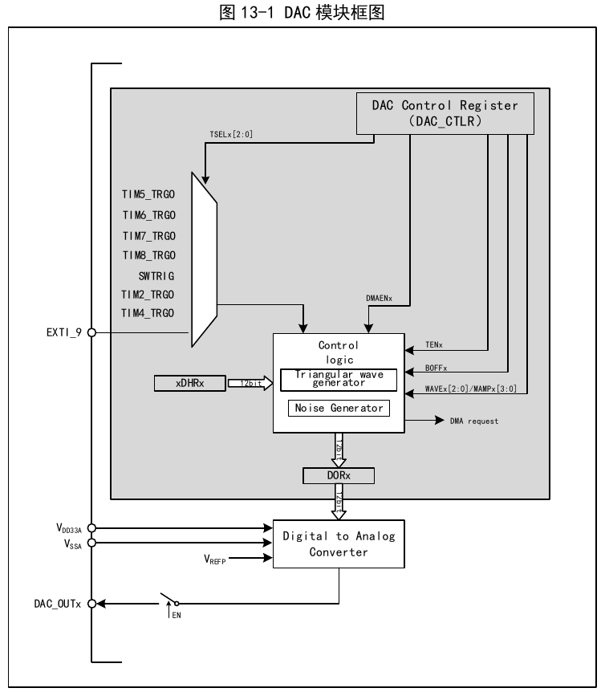
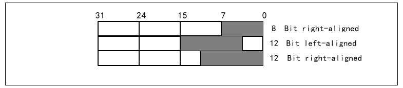
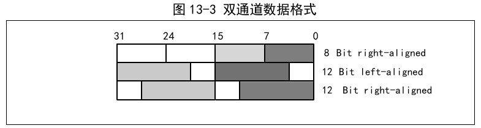
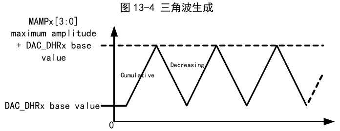
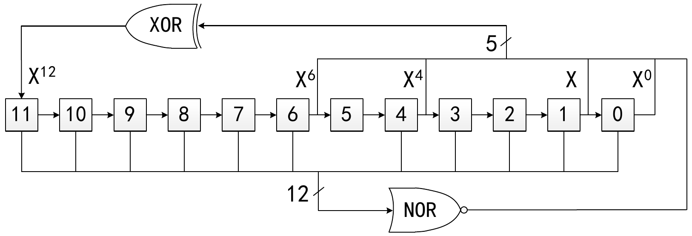

The Digital-to-Analog Conversion module (DAC) contains two 12-bit voltage-output digital-to-analog converters (DAC) that convert two digital signals into two analog voltage signals and output them. It supports independent or simultaneous conversion of dual DAC channels, 12-bit data left-aligned or right-aligned, 12-bit or 8-bit data, and external event-triggered conversion. It can generate triangle waves and noise, and supports DMA functionality.

Setting the ENx bit in the DAC_CTLR register to 1 enables the analog power supply to DAC channel x. After a startup time, DAC channel x is enabled. The DAC contains two analog output channels, which can output simultaneously or independently.
The DAC integrates an output buffer that can be used to reduce output impedance and increase driving capability to directly drive external loads. Each DAC channel output buffer can be enabled or disabled by setting the BOFFx bit in the DAC_CTLR register.
In single DAC channel mode, the data formats include 8-bit right-aligned, 12-bit left-aligned, and 12-bit right-aligned.
In 8-bit right-aligned mode, data is written to DAC_R8BDHRx[7:0], and the module loads (after 1 PB1 clock cycle) the left-shifted data into the data output register DAC_DORx[11:4].
In 12-bit right-aligned mode, data is written to DAC_R12BDHRx[11:0], and the module loads (after 1 PB1 clock cycle) the right-aligned data into the data output register DAC_DORx[11:0].
In 12-bit left-aligned mode, data is written to DAC_L12BDHRx[15:4], and after corresponding shifting, the module loads (after 1 PB1 clock cycle) the left-aligned data into the data output register DAC_DORx[11:0].

In dual DAC channel mode, there are also three formats: 8-bit right-aligned, 12-bit left-aligned, and 12-bit right-aligned.
In 8-bit right-aligned mode, data is written to DAC_RD8BDHR[7:0], and the module loads (after 1 PB1 clock cycle) bits[7:0] shifted into DAC_DOR1[11:4], and bits[15:8] shifted into DAC_DOR2[11:4].
In 12-bit left-aligned mode, data is written to DAC_LD12BDHR[31:0], and the module loads (after 1 PB1 clock cycle) bits[15:4] shifted into DAC_DOR1[11:0], and bits[31:20] shifted into DAC_DOR2[11:0].
In 12-bit right-aligned mode, data is written to DAC_RD12BDHR[31:0], and the module loads (after 1 PB1 clock cycle) bits[11:0] into DAC_DOR1[11:0], and bits[27:16] into DAC_DOR2[11:0].

The DAC channel has DMA functionality. Setting the DMAENx bit in the DAC_CTLR register to 1 enables the DMA function for the corresponding channel. When a trigger event (excluding software trigger) occurs, a DMA request is generated, and then the data in the DAC_DORx register is updated.
DAC conversion can be triggered by the following events. When the TENx bit in the DAC_CTLR register is set to 1, the TSELx[2:0] control bits select a specific trigger event to trigger DAC conversion.
| Trigger source | Type | TSELx[2:0] |
|---|---|---|
| Timer 6 TRGO event | Internal signal from on-chip timer | 000 |
| Timer 8 TRGO event | 001 | |
| Timer 7 TRGO event | 010 | |
| Timer 5 TRGO event | 011 | |
| Timer 2 TRGO event | 100 | |
| Timer 4 TRGO event | 101 | |
| EXTI line 9 | External pin | 110 |
| SWTRIG (software trigger) | Software control bit | 111 |
The DAC interface detects the rising edge from the selected timer TRGO output or external interrupt line 9, and updates the DAC_DORx register with the new value 3 PB1 clock cycles after the trigger.
If software trigger mode is configured, once the SWTRIG bit is set to 1, a conversion is initiated. The DAC_DORx register is updated with the new value 1 PB1 clock cycle after the trigger, and the hardware automatically clears the SWTRIG bit.
The data for the DAC channel comes from the DAC_DORx register, but data cannot be written directly to the DAC_DORx register. Any data output to DAC channel x must be written to the DAC_R12BDHR1, DAC_L12BDHR1, DAC_R12BDHR2, DAC_L12BDHR2, DAC_RD12BDHR, DAC_LD12BDHR, or DAC_RD8BDHR registers. The internal holding register DAC_DHRx obtains the values from the above registers and transfers them to the DAC_DORx register after the corresponding time.
In non-trigger mode, data written to the DAC_xDHRx register is shifted into the DAC_DORx register after 1 PB1 clock cycle.
In software trigger mode, the DAC_DORx register is automatically updated 1 PB1 clock cycle after the trigger event rising edge.
In hardware trigger mode (timer TRGO event or external interrupt line 9 rising edge), the DAC_DORx register is automatically updated 3 PB1 clock cycles after the trigger event.
After data is loaded into the DAC_DORx register, the output becomes valid after a settling time tSETTLING. The duration of this time varies depending on the power supply voltage and the analog output load.
The digital input is linearly converted by the DAC to an analog voltage output in the range of 0 to VDD33A. The output voltage on any DAC channel pin satisfies the following relationship:
DAC output voltage = VDD33A × (DAC_DORx / 4096).
The module has a built-in triangle wave generator that can superimpose a small-amplitude triangle wave on the base signal. Set the WAVEx[1:0] bits to 10b to select the DAC triangle wave generation function. Set the MAMPx[3:0] bits in the DAC_CTLR register to select the triangle wave amplitude.
Internally, the system contains a triangle wave counter starting from 0, which increments by 1 after 3 PB1 clock cycles following each trigger event. The counter value is added to the DAC_DHRx register value, overflow bits are discarded, and the result is written to the DAC_DORx register. When the value loaded into the DAC_DORx register is less than the maximum amplitude defined by the MAMPx[3:0] bits, the triangle wave counter increments step by step. Once the set maximum amplitude is reached, the counter begins to decrement. After reaching 0, it begins incrementing again, repeating the cycle. Setting the WAVEx[1:0] bits to '00' resets the triangle wave generation.

The module has a built-in noise generator that uses a Linear Feedback Shift Register (LFSR) to generate pseudo-noise with varying amplitude. Set the WAVE[1:0] bits to 01b to select the DAC noise generation function. Set the MAMPx[3:0] bits in the DAC_CTLR register to select which part of the LFSR data to mask.
The LFSR register is preloaded with 0xAAA. According to a specific algorithm, the register value is updated after 3 PB1 clock cycles following each trigger event. Setting the MAMPx[3:0] bits in the DAC_CR register can mask part or all of the LFSR data. The resulting LFSR value is added to the DAC_DHRx value, overflow bits are discarded, and the result is written to the DAC_DORx register. If the LFSR register value is 0x000, a 1 is injected (anti-lock mechanism). Setting the WAVEx[1:0] bits to 00b resets the LFSR waveform generation algorithm.

When simultaneous conversion of two DACs is required, for more convenient and efficient operation of the DAC module, the module integrates three dual-DAC-mode data registers: DAC_RD8BDHR, DAC_LD12BDHR, and DAC_RD12BDHR. Operating any one of these registers updates the conversion values of both DACs.
Dual DAC conversion can be combined with other module registers to achieve 11 different combinations of conversion modes. The values to be converted for both channels must be written into one of the three dual-channel data registers.
Set TENx, TSELx to different values, WAVEx to 0b01, and MAMPx to the same LFSR mask value. When channel 1 trigger event occurs, the channel 1 data register DAC_DHR1 value is added to the LFSR1 counter value with the same mask, delayed 3 PB1 clock cycles, then sent to DAC_DOR1 for conversion, and LFSR1 is updated. When channel 2 trigger event occurs, the channel 2 data register DAC_DHR2 value is added to the LFSR2 counter value with the same mask, delayed 3 PB1 clock cycles, then sent to DAC_DOR2 for conversion, and LFSR2 is updated.
Set TENx, TSELx to different values, WAVEx to 0b01, and MAMPx to different LFSR mask values. When channel 1 trigger event occurs, the channel 1 data register DAC_DHR1 value is added to the LFSR1 counter value masked by MAMP1[3:0], delayed 3 PB1 clock cycles, then sent to DAC_DOR1 for conversion, and LFSR1 is updated. When channel 2 trigger event occurs, the channel 2 data register DAC_DHR2 value is added to the LFSR2 counter value masked by MAMP2[3:0], delayed 3 PB1 clock cycles, then sent to DAC_DOR2 for conversion, and LFSR2 is updated.
Set TENx, TSELx to different values, WAVEx to 0b1x, and MAMPx to the same triangle wave amplitude. When channel 1 trigger event occurs, the channel 1 data register DAC_DHR1 value is added to the triangle wave counter value with the same amplitude set by MAMPx, delayed 3 PB1 clock cycles, then sent to DAC_DOR1 for conversion, and channel 1 triangle wave counter is updated. When channel 2 trigger event occurs, the channel 2 data register DAC_DHR2 value is added to the triangle wave counter value with the same amplitude set by MAMPx, delayed 3 PB1 clock cycles, then sent to DAC_DOR2 for conversion, and channel 2 triangle wave counter is updated.
Set TENx, TSELx to different values, WAVEx to 0b1x, and MAMPx to different triangle wave amplitudes. When channel 1 trigger event occurs, the channel 1 data register DAC_DHR1 value is added to the triangle wave counter value with the amplitude set by MAMP1, delayed 3 PB1 clock cycles, then sent to DAC_DOR1 for conversion, and channel 1 triangle wave counter is updated. When channel 2 trigger event occurs, the channel 2 data register DAC_DHR2 value is added to the triangle wave counter value with the amplitude set by MAMP2, delayed 3 PB1 clock cycles, then sent to DAC_DOR2 for conversion, and channel 2 triangle wave counter is updated.
Set TENx, TSELx to different values to select different trigger sources. When channel 1 trigger event occurs, the channel 1 data register DAC_DHR1 value is delayed 3 PB1 clock cycles, then sent to DAC_DOR1 for conversion. When channel 2 trigger event occurs, the channel 2 data register DAC_DHR2 value is delayed 3 PB1 clock cycles, then sent to DAC_DOR2 for conversion.
In this configuration, write the conversion values to the dual-channel data registers. After 1 PB1 clock cycle, the data of DAC_DHR1 and DAC_DHR2 are sent to DAC_DOR1 and DAC_DOR2 respectively for conversion.
Set TENx, TSELx to the same value, WAVEx to 0b01, and MAMPx to the same LFSR mask value. When the trigger event occurs, the register DAC_DHR1 value is added to the LFSR1 counter value with the same mask, delayed 3 PB1 clock cycles, then sent to DAC_DOR1 for conversion, and LFSR1 is updated. Simultaneously, the register DAC_DHR2 value is added to the LFSR2 counter value with the same mask, delayed 3 PB1 clock cycles, then sent to DAC_DOR2 for conversion, and LFSR2 is updated.
Set TENx, TSELx to the same value, WAVEx to 0b01, and MAMPx to different LFSR mask values. When the trigger event occurs, the register DAC_DHR1 value is added to the LFSR1 counter value with different mask values, delayed 3 PB1 clock cycles, then sent to DAC_DOR1 for conversion, and LFSR1 is updated. Simultaneously, the register DAC_DHR2 value is added to the LFSR2 counter value with different mask values, delayed 3 PB1 clock cycles, then sent to DAC_DOR2 for conversion, and LFSR2 is updated.
Set TENx, TSELx to the same value, WAVEx to 0b1x, and MAMPx to the same triangle wave amplitude. When the trigger event occurs, the register DAC_DHR1 value is added to the counter value with the same triangle wave amplitude, delayed 3 PB1 clock cycles, then sent to DAC_DOR1 for conversion, and channel 1 triangle wave counter is updated. Simultaneously, the register DAC_DHR2 value is added to the counter value with the same triangle wave amplitude, delayed 3 PB1 clock cycles, then sent to DAC_DOR2 for conversion, and channel 2 triangle wave counter is updated.
Set TENx, TSELx to the same value, WAVEx to 0b1x, and MAMPx to different triangle wave amplitudes. When the trigger event occurs, the register DAC_DHR1 value is added to the triangle wave amplitude counter value set by MAMP1[3:0], delayed 3 PB1 clock cycles, then sent to DAC_DOR1 for conversion, and channel 1 triangle wave counter is updated. Simultaneously, the register DAC_DHR2 value is added to the triangle wave amplitude counter value set by MAMP2[3:0], delayed 3 PB1 clock cycles, then sent to DAC_DOR2 for conversion, and channel 2 triangle wave counter is updated.
Set TENx, TSELx to the same value. In this configuration, when the trigger event occurs, the register DAC_DHR1 and DAC_DHR2 values are sent to DAC_DOR1 and DAC_DOR2 respectively for DAC conversion after a delay of 3 PB1 clock cycles.
| Name | Address | Description | Reset Value |
|---|---|---|---|
| R32_DAC_CTLR | 0x40007400 | DAC configuration register | 0x00000000 |
| R32_DAC_SWTR | 0x40007404 | DAC software trigger register | 0x00000000 |
| R32_DAC_R12BDHR1 | 0x40007408 | DAC channel 1 right-aligned 12-bit data holding register | 0x00000000 |
| R32_DAC_L12BDHR1 | 0x4000740C | DAC channel 1 left-aligned 12-bit data holding register | 0x00000000 |
| R32_DAC_R8BDHR1 | 0x40007410 | DAC channel 1 right-aligned 8-bit data holding register | 0x00000000 |
| R32_DAC_R12BDHR2 | 0x40007414 | DAC channel 2 right-aligned 12-bit data holding register | 0x00000000 |
| R32_DAC_L12BDHR2 | 0x40007418 | DAC channel 2 left-aligned 12-bit data holding register | 0x00000000 |
| R32_DAC_R8BDHR2 | 0x4000741C | DAC channel 2 right-aligned 8-bit data holding register | 0x00000000 |
| R32_DAC_RD12BDHR | 0x40007420 | Dual-channel right-aligned 12-bit data holding register | 0x00000000 |
| R32_DAC_LD12BDHR | 0x40007424 | Dual-channel left-aligned 12-bit data holding register | 0x00000000 |
| R32_DAC_RD8BDHR | 0x40007428 | Dual-channel right-aligned 8-bit data holding register | 0x00000000 |
| R32_DAC_DOR1 | 0x4000742C | DAC channel 1 data output register | 0x00000000 |
| R32_DAC_DOR2 | 0x40007430 | DAC channel 2 data output register | 0x00000000 |
Offset address: 0x00
| 31 | 30 | 29 | 28 | 27 | 26 | 25 | 24 | 23 | 22 | 21 | 20 | 19 | 18 | 17 | 16 |
|---|---|---|---|---|---|---|---|---|---|---|---|---|---|---|---|
| Reserved | DMAEN2 | MAMP2[3:0] | WAVE2[1:0] | TSEL2[2:0] | TEN2 | BOFF2 | EN2 | ||||||||
| 15 | 14 | 13 | 12 | 11 | 10 | 9 | 8 | 7 | 6 | 5 | 4 | 3 | 2 | 1 | 0 |
|---|---|---|---|---|---|---|---|---|---|---|---|---|---|---|---|
| Reserved | DMAEN1 | MAMP1[3:0] | WAVE1[1:0] | TSEL1[2:0] | TEN1 | BOFF1 | EN1 | ||||||||
| Bits | Name | Access | Description | Reset |
|---|---|---|---|---|
| [31:29] | Reserved | RO | Reserved. | 0 |
| 28 | DMAEN2 | RW | DAC channel 2 DMA enable: 1: Enable DAC channel 2 DMA function; 0: Disable DAC channel 2 DMA function. |
0 |
| [27:24] | MAMP2[3:0] | RW | DAC channel 2 mask/amplitude setting. Software sets this field to select the LFSR data mask bits in noise generation mode, or to select the waveform amplitude in triangle wave generation mode: 0000: Unmask LFSR bit 0 / triangle wave amplitude 1; 0001: Unmask LFSR bits[1:0] / triangle wave amplitude 3; 0010: Unmask LFSR bits[2:0] / triangle wave amplitude 7; 0011: Unmask LFSR bits[3:0] / triangle wave amplitude 15; 0100: Unmask LFSR bits[4:0] / triangle wave amplitude 31; 0101: Unmask LFSR bits[5:0] / triangle wave amplitude 63; 0110: Unmask LFSR bits[6:0] / triangle wave amplitude 127; 0111: Unmask LFSR bits[7:0] / triangle wave amplitude 255; 1000: Unmask LFSR bits[8:0] / triangle wave amplitude 511; 1001: Unmask LFSR bits[9:0] / triangle wave amplitude 1023; 1010: Unmask LFSR bits[10:0] / triangle wave amplitude 2047; ≥1011: Unmask LFSR bits[11:0] / triangle wave amplitude 4095. |
0000b |
| [23:22] | WAVE2[1:0] | RW | DAC channel 2 noise/triangle wave generation enable: 00: Disable waveform generator; 01: Enable noise waveform generator; 1x: Enable triangle wave waveform generator. |
00b |
| [21:19] | TSEL2[2:0] | RW | DAC channel 2 trigger event selection: 000: TIM6 TRGO event; 001: TIM8 TRGO event; 010: TIM7 TRGO event; 011: TIM5 TRGO event; 100: TIM2 TRGO event; 101: TIM4 TRGO event; 110: External interrupt line 9; 111: Software trigger; Other: Reserved. |
000b |
| 18 | TEN2 | RW | DAC channel 2 external trigger mode enable: 1: Enable DAC channel 2 trigger function. Data written to the DAC_xDHR register is transferred to the DAC_DOR2 register after 3 PB1 clock cycles. 0: Disable DAC channel 2 trigger function. Data written to the DAC_xDHR register is transferred to the DAC_DOR2 register after 1 PB1 clock cycle. Note: If software trigger is selected, the data in DAC_xDHR is transferred to the DAC_DOR2 register after only 1 PB1 clock cycle. |
0 |
| 17 | BOFF2 | RW | DAC channel 2 output buffer disable control (recommended to enable): 1: Disable DAC channel 2 output buffer; 0: Enable DAC channel 2 output buffer. |
0 |
| 16 | EN2 | RW | DAC channel 2 enable: 1: Enable DAC channel 2; 0: Disable DAC channel 2. |
0 |
| [15:13] | Reserved | RO | Reserved. | 0 |
| 12 | DMAEN1 | RW | DAC channel 1 DMA enable: 1: Enable DAC channel 1 DMA function; 0: Disable DAC channel 1 DMA function. |
0 |
| [11:8] | MAMP1[3:0] | RW | DAC channel 1 mask/amplitude setting. Software sets this field to select the LFSR data mask bits in noise generation mode, or to select the waveform amplitude in triangle wave generation mode: 0000: Unmask LFSR bit 0 / triangle wave amplitude 1; 0001: Unmask LFSR bits[1:0] / triangle wave amplitude 3; 0010: Unmask LFSR bits[2:0] / triangle wave amplitude 7; 0011: Unmask LFSR bits[3:0] / triangle wave amplitude 15; 0100: Unmask LFSR bits[4:0] / triangle wave amplitude 31; 0101: Unmask LFSR bits[5:0] / triangle wave amplitude 63; 0110: Unmask LFSR bits[6:0] / triangle wave amplitude 127; 0111: Unmask LFSR bits[7:0] / triangle wave amplitude 255; 1000: Unmask LFSR bits[8:0] / triangle wave amplitude 511; 1001: Unmask LFSR bits[9:0] / triangle wave amplitude 1023; 1010: Unmask LFSR bits[10:0] / triangle wave amplitude 2047; ≥1011: Unmask LFSR bits[11:0] / triangle wave amplitude 4095. |
0000b |
| [7:6] | WAVE1[1:0] | RW | DAC channel 1 noise/triangle wave generation enable: 00: Disable waveform generator; 01: Enable noise waveform generator; 1x: Enable triangle wave waveform generator. |
00b |
| [5:3] | TSEL1[2:0] | RW | DAC channel 1 trigger event selection: 000: TIM6 TRGO event; 001: TIM8 TRGO event; 010: TIM7 TRGO event; 011: TIM5 TRGO event; 100: TIM2 TRGO event; 101: TIM4 TRGO event; 110: External interrupt line 9; 111: Software trigger; Other: Reserved. |
000b |
| 2 | TEN1 | RW | DAC channel 1 external trigger mode enable: 1: Enable DAC channel 1 trigger function. Data written to the DAC_xDHR register is transferred to the DAC_DOR1 register after 3 PB1 clock cycles. 0: Disable DAC channel 1 trigger function. Data written to the DAC_xDHR register is transferred to the DAC_DOR1 register after 1 PB1 clock cycle. Note: If software trigger is selected, the data in DAC_xDHR is transferred to the DAC_DOR1 register after only 1 PB1 clock cycle. |
0 |
| 1 | BOFF1 | RW | DAC channel 1 output buffer disable control (recommended to enable): 1: Disable DAC channel 1 output buffer; 0: Enable DAC channel 1 output buffer. |
0 |
| 0 | EN1 | RW | DAC channel 1 enable: 1: Enable DAC channel 1; 0: Disable DAC channel 1. |
0 |
Offset address: 0x04
| 31 | 30 | 29 | 28 | 27 | 26 | 25 | 24 | 23 | 22 | 21 | 20 | 19 | 18 | 17 | 16 |
|---|---|---|---|---|---|---|---|---|---|---|---|---|---|---|---|
| Reserved | |||||||||||||||
| 15 | 14 | 13 | 12 | 11 | 10 | 9 | 8 | 7 | 6 | 5 | 4 | 3 | 2 | 1 | 0 |
|---|---|---|---|---|---|---|---|---|---|---|---|---|---|---|---|
| Reserved | SWTRIG2 | SWTRIG1 | |||||||||||||
| Bits | Name | Access | Description | Reset |
|---|---|---|---|---|
| [31:2] | Reserved | RO | Reserved. | 0 |
| 1 | SWTRIG2 | WO | DAC channel 2 software trigger control bit: 1: Enable DAC channel 2 software trigger; 0: Disable DAC channel 2 software trigger. Note: Once the data in DAC_xDHR is transferred to the DAC_DOR2 register (after 1 PB1 clock cycle), this bit is hardware-cleared. |
0 |
| 0 | SWTRIG1 | WO | DAC channel 1 software trigger control bit: 1: Enable DAC channel 1 software trigger; 0: Disable DAC channel 1 software trigger. Note: Once the data in DAC_xDHR is transferred to the DAC_DOR1 register (after 1 PB1 clock cycle), this bit is hardware-cleared. |
0 |
Offset address: 0x08
| 31 | 30 | 29 | 28 | 27 | 26 | 25 | 24 | 23 | 22 | 21 | 20 | 19 | 18 | 17 | 16 |
|---|---|---|---|---|---|---|---|---|---|---|---|---|---|---|---|
| Reserved | |||||||||||||||
| 15 | 14 | 13 | 12 | 11 | 10 | 9 | 8 | 7 | 6 | 5 | 4 | 3 | 2 | 1 | 0 |
|---|---|---|---|---|---|---|---|---|---|---|---|---|---|---|---|
| Reserved | DACC1DHR[11:0] | ||||||||||||||
| Bits | Name | Access | Description | Reset |
|---|---|---|---|---|
| [31:12] | Reserved | RO | Reserved. | 0 |
| [11:0] | DACC1DHR[11:0] | RW | 12-bit right-aligned data for DAC channel 1. | 0 |
Offset address: 0x0C
| 31 | 30 | 29 | 28 | 27 | 26 | 25 | 24 | 23 | 22 | 21 | 20 | 19 | 18 | 17 | 16 |
|---|---|---|---|---|---|---|---|---|---|---|---|---|---|---|---|
| Reserved | |||||||||||||||
| 15 | 14 | 13 | 12 | 11 | 10 | 9 | 8 | 7 | 6 | 5 | 4 | 3 | 2 | 1 | 0 |
|---|---|---|---|---|---|---|---|---|---|---|---|---|---|---|---|
| DACC1DHR[11:0] | Reserved | ||||||||||||||
| Bits | Name | Access | Description | Reset |
|---|---|---|---|---|
| [31:16] | Reserved | RO | Reserved. | 0 |
| [15:4] | DACC1DHR[11:0] | RW | 12-bit left-aligned data for DAC channel 1. | 0 |
| [3:0] | Reserved | RO | Reserved. | 0 |
Offset address: 0x10
| 31 | 30 | 29 | 28 | 27 | 26 | 25 | 24 | 23 | 22 | 21 | 20 | 19 | 18 | 17 | 16 |
|---|---|---|---|---|---|---|---|---|---|---|---|---|---|---|---|
| Reserved | |||||||||||||||
| 15 | 14 | 13 | 12 | 11 | 10 | 9 | 8 | 7 | 6 | 5 | 4 | 3 | 2 | 1 | 0 |
|---|---|---|---|---|---|---|---|---|---|---|---|---|---|---|---|
| Reserved | DACC1DHR[7:0] | ||||||||||||||
| Bits | Name | Access | Description | Reset |
|---|---|---|---|---|
| [31:8] | Reserved | RO | Reserved. | 0 |
| [7:0] | DACC1DHR[7:0] | RW | 8-bit right-aligned data for DAC channel 1. | 0 |
Offset address: 0x14
| 31 | 30 | 29 | 28 | 27 | 26 | 25 | 24 | 23 | 22 | 21 | 20 | 19 | 18 | 17 | 16 |
|---|---|---|---|---|---|---|---|---|---|---|---|---|---|---|---|
| Reserved | |||||||||||||||
| 15 | 14 | 13 | 12 | 11 | 10 | 9 | 8 | 7 | 6 | 5 | 4 | 3 | 2 | 1 | 0 |
|---|---|---|---|---|---|---|---|---|---|---|---|---|---|---|---|
| Reserved | DACC2DHR[11:0] | ||||||||||||||
| Bits | Name | Access | Description | Reset |
|---|---|---|---|---|
| [31:12] | Reserved | RO | Reserved. | 0 |
| [11:0] | DACC2DHR[11:0] | RW | 12-bit right-aligned data for DAC channel 2. | 0 |
Offset address: 0x18
| 31 | 30 | 29 | 28 | 27 | 26 | 25 | 24 | 23 | 22 | 21 | 20 | 19 | 18 | 17 | 16 |
|---|---|---|---|---|---|---|---|---|---|---|---|---|---|---|---|
| Reserved | |||||||||||||||
| 15 | 14 | 13 | 12 | 11 | 10 | 9 | 8 | 7 | 6 | 5 | 4 | 3 | 2 | 1 | 0 |
|---|---|---|---|---|---|---|---|---|---|---|---|---|---|---|---|
| DACC2DHR[11:0] | Reserved | ||||||||||||||
| Bits | Name | Access | Description | Reset |
|---|---|---|---|---|
| [31:16] | Reserved | RO | Reserved. | 0 |
| [15:4] | DACC2DHR[11:0] | RW | 12-bit left-aligned data for DAC channel 2. | 0 |
| [3:0] | Reserved | RO | Reserved. | 0 |
Offset address: 0x1C
| 31 | 30 | 29 | 28 | 27 | 26 | 25 | 24 | 23 | 22 | 21 | 20 | 19 | 18 | 17 | 16 |
|---|---|---|---|---|---|---|---|---|---|---|---|---|---|---|---|
| Reserved | |||||||||||||||
| 15 | 14 | 13 | 12 | 11 | 10 | 9 | 8 | 7 | 6 | 5 | 4 | 3 | 2 | 1 | 0 |
|---|---|---|---|---|---|---|---|---|---|---|---|---|---|---|---|
| Reserved | DACC2DHR[7:0] | ||||||||||||||
| Bits | Name | Access | Description | Reset |
|---|---|---|---|---|
| [31:8] | Reserved | RO | Reserved. | 0 |
| [7:0] | DACC2DHR[7:0] | RW | 8-bit right-aligned data for DAC channel 2. | 0 |
Offset address: 0x20
| 31 | 30 | 29 | 28 | 27 | 26 | 25 | 24 | 23 | 22 | 21 | 20 | 19 | 18 | 17 | 16 |
|---|---|---|---|---|---|---|---|---|---|---|---|---|---|---|---|
| Reserved | DACC2DHR[11:0] | ||||||||||||||
| 15 | 14 | 13 | 12 | 11 | 10 | 9 | 8 | 7 | 6 | 5 | 4 | 3 | 2 | 1 | 0 |
|---|---|---|---|---|---|---|---|---|---|---|---|---|---|---|---|
| Reserved | DACC1DHR[11:0] | ||||||||||||||
| Bits | Name | Access | Description | Reset |
|---|---|---|---|---|
| [31:28] | Reserved | RO | Reserved. | 0 |
| [27:16] | DACC2DHR[11:0] | RW | 12-bit right-aligned data for DAC channel 2. | 0 |
| [15:12] | Reserved | RO | Reserved. | 0 |
| [11:0] | DACC1DHR[11:0] | RW | 12-bit right-aligned data for DAC channel 1. | 0 |
Offset address: 0x24
| 31 | 30 | 29 | 28 | 27 | 26 | 25 | 24 | 23 | 22 | 21 | 20 | 19 | 18 | 17 | 16 |
|---|---|---|---|---|---|---|---|---|---|---|---|---|---|---|---|
| DACC2DHR[11:0] | Reserved | ||||||||||||||
| 15 | 14 | 13 | 12 | 11 | 10 | 9 | 8 | 7 | 6 | 5 | 4 | 3 | 2 | 1 | 0 |
|---|---|---|---|---|---|---|---|---|---|---|---|---|---|---|---|
| DACC1DHR[11:0] | Reserved | ||||||||||||||
| Bits | Name | Access | Description | Reset |
|---|---|---|---|---|
| [31:20] | DACC2DHR[11:0] | RW | 12-bit left-aligned data for DAC channel 2. | 0 |
| [19:16] | Reserved | RO | Reserved. | 0 |
| [15:4] | DACC1DHR[11:0] | RW | 12-bit left-aligned data for DAC channel 1. | 0 |
| [3:0] | Reserved | RO | Reserved. | 0 |
Offset address: 0x28
| 31 | 30 | 29 | 28 | 27 | 26 | 25 | 24 | 23 | 22 | 21 | 20 | 19 | 18 | 17 | 16 |
|---|---|---|---|---|---|---|---|---|---|---|---|---|---|---|---|
| Reserved | |||||||||||||||
| 15 | 14 | 13 | 12 | 11 | 10 | 9 | 8 | 7 | 6 | 5 | 4 | 3 | 2 | 1 | 0 |
|---|---|---|---|---|---|---|---|---|---|---|---|---|---|---|---|
| DACC2DHR[7:0] | DACC1DHR[7:0] | ||||||||||||||
| Bits | Name | Access | Description | Reset |
|---|---|---|---|---|
| [31:16] | Reserved | RO | Reserved. | 0 |
| [15:8] | DACC2DHR[7:0] | RW | 8-bit right-aligned data for DAC channel 2. | 0 |
| [7:0] | DACC1DHR[7:0] | RW | 8-bit right-aligned data for DAC channel 1. | 0 |
Offset address: 0x2C
| 31 | 30 | 29 | 28 | 27 | 26 | 25 | 24 | 23 | 22 | 21 | 20 | 19 | 18 | 17 | 16 |
|---|---|---|---|---|---|---|---|---|---|---|---|---|---|---|---|
| Reserved | |||||||||||||||
| 15 | 14 | 13 | 12 | 11 | 10 | 9 | 8 | 7 | 6 | 5 | 4 | 3 | 2 | 1 | 0 |
|---|---|---|---|---|---|---|---|---|---|---|---|---|---|---|---|
| Reserved | DACC1DOR[11:0] | ||||||||||||||
| Bits | Name | Access | Description | Reset |
|---|---|---|---|---|
| [31:12] | Reserved | RO | Reserved. | 0 |
| [11:0] | DACC1DOR[11:0] | RO | DAC channel 1 output data. | 0 |
Offset address: 0x30
| 31 | 30 | 29 | 28 | 27 | 26 | 25 | 24 | 23 | 22 | 21 | 20 | 19 | 18 | 17 | 16 |
|---|---|---|---|---|---|---|---|---|---|---|---|---|---|---|---|
| Reserved | |||||||||||||||
| 15 | 14 | 13 | 12 | 11 | 10 | 9 | 8 | 7 | 6 | 5 | 4 | 3 | 2 | 1 | 0 |
|---|---|---|---|---|---|---|---|---|---|---|---|---|---|---|---|
| Reserved | DACC2DOR[11:0] | ||||||||||||||
| Bits | Name | Access | Description | Reset |
|---|---|---|---|---|
| [31:12] | Reserved | RO | Reserved. | 0 |
| [11:0] | DACC2DOR[11:0] | RO | DAC channel 2 output data. | 0 |